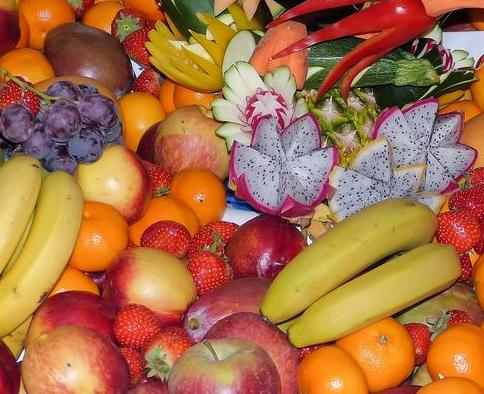

History of Bountiful Company
The Bountiful company was founded in 1971 on Long Isalnd, NY. It was at first called The Nature's Bounty Co.
History of Carlsbad, California
Carlsbad, California, called The Village By The Sea, is a city along the coast in northern San Diego County.
This small city is closer to two big California cities — San Diego and Los Angeles.
It was made to be a city in July 1952.
The first people to settle in Carlsbad were the Luiseño Indians.
In 1883, Captain John A. Frazier dug a well near the coast in Carlsbad. He was happy to
find fresh-water, rich with minerals, and started giving it at the local train station.
After testing a second fresh-water well in the area, many of the chemicals found were similar to those used in
some of the most renowned spas around the world. Because of this, the town was named after the famous spa in the Bohemian town of
Karlsbad.
Carlsbad was officially incorporated in 1952 to avoid annexation by its northern neighbor, Oceanside. Since then,
The Village By The Sea has flourished into an affluent city with a population of over 112,000 people.
Contact Us
Phone: (916) 595-5600
Email: bountifulfood@bountiful.org
Address: 2600 River Plaza Dr. Sacramento, CA 95833
Locate Us
Enjoyable Fruit juice

Delicious Fruits
Scrumptious Fruits